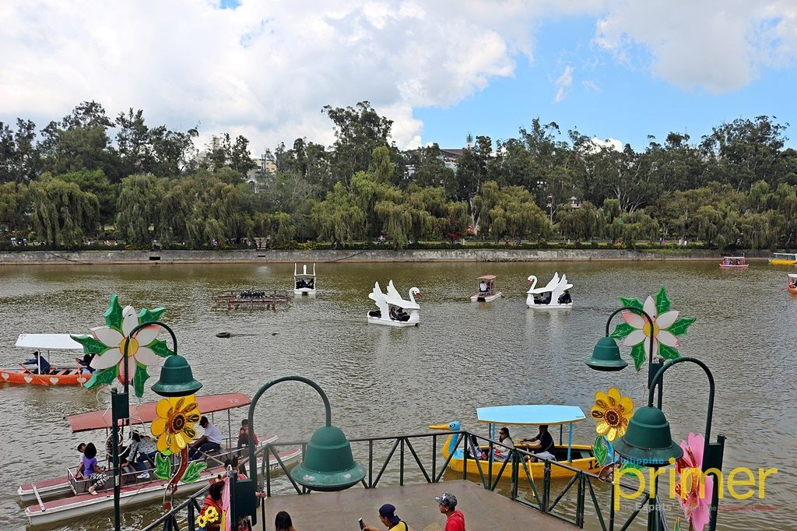

Home
Gallery
Maps
About
Contact Us
Parks in Baguio
Foods

𝓑𝓾𝓻𝓷𝓱𝓪𝓶 𝓟𝓪𝓻𝓴 𝓛𝓸𝓬𝓪𝓽𝓲𝓸𝓷
A classic Baguio tourist spot, Burnham Park is located in the heart of Baguio City. It has a mix of activities that will undoubtedly take you at least the whole afternoon to try. Go for a ride in one of the many boats that line the corners of Burnham Lake. You can also rent a two-seater chopper bike or a non-motorized go-kart for less than Php 100.
If you want to learned more about Baguios Parks CLICK HERE!!.
Baguio Parks.
𝒩𝒾𝑔𝒽𝓉 𝑀𝒶𝓇𝓀𝑒𝓉
Besides experiencing the city’s vibrant arts scene, tourists in Baguio find it hard to leave without at least trying to find something from the popular Night Market. It’s a flea market where you can find almost any type of casual clothing you can think of: jeans, sneakers, dress shoes, jackets, and the like. It takes up half of Harrison Road, located northeast of Burnham Park, and starts between 9 and 9:30 pm.
If you want to learned more about Baguios Parks CLICK HERE!!.
More Foods.